Question 1 [3]
The equation of a curve is such that dy/dx = 4/(x − 3)³ for x > 3. The curve passes through the point (4, 5). Find the equation of the curve.
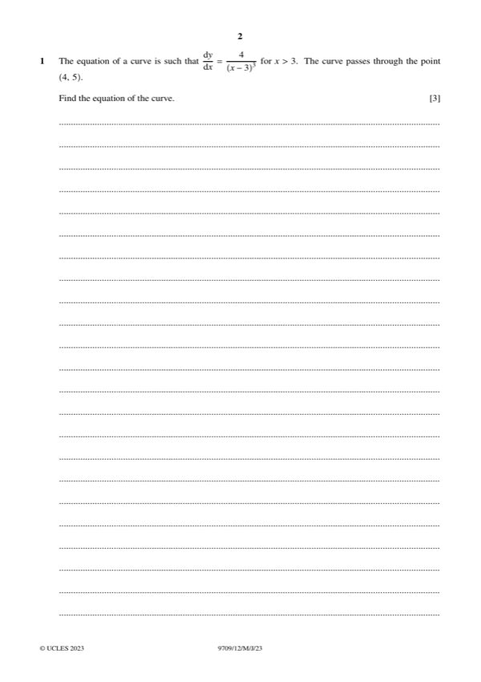
Original paper page 2
y = ∫4(x − 3)⁻³ dx = −2(x − 3)⁻² + C
At (4, 5): 5 = −2 + C → C = 7
y = 7 − 2/(x − 3)²
Question 2 [4]
The coefficient of x⁴ in the expansion of (x + a)⁶ is p, and the coefficient of x² in the expansion of (ax + 3)⁴ is q. It is given that p + q = 276. Find the possible values of the constant a.
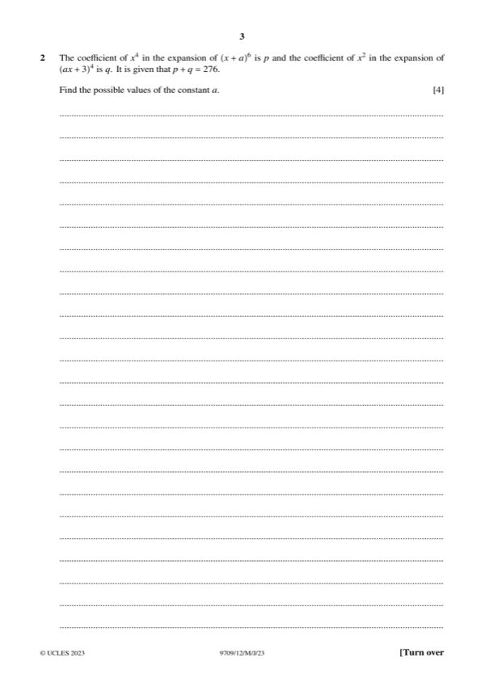
Original paper page 3
p = C(6,4)a² = 15a²
q = C(4,2)(a)²(3)² = 54a²
15a² + 54a² = 276 → 69a² = 276 → a² = 4
a = 2 or a = −2
Question 3 [2 + 1]
(a) Express 4x² − 24x + p in the form a(x + b)² + c. (b) Hence find the set of values of p for which 4x² − 24x + p = 0 has no real roots.
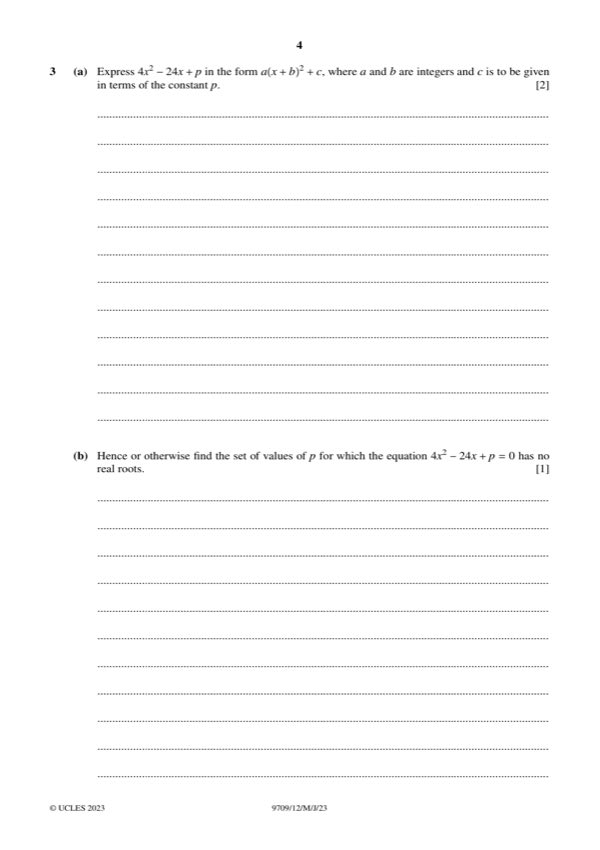
Original paper page 4
(a) [2]
4x² − 24x + p = 4(x − 3)² − 36 + p
a = 4, b = −3, c = p − 36
(b) [1]
No real roots requires c > 0: p − 36 > 0
p > 36
Question 4 [3]
Solve the equation 8x⁶ + 215x³ − 27 = 0.
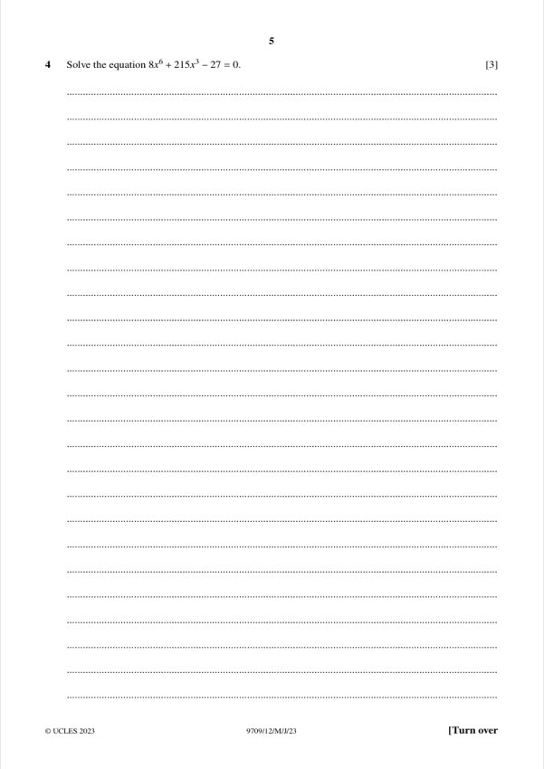
Original paper page 5
Let y = x³: 8y² + 215y − 27 = 0
(8y − 1)(y + 27) = 0 → y = 1/8 or y = −27
x³ = 1/8 → x = 1/2; x³ = −27 → x = −3
x = 1/2 or x = −3 (real roots)
Question 5 [4]
The curve y = 10x^(1/2) − (5/2)x^(3/2) for x > 0 meets the x-axis at (0, 0) and (4, 0). Find the area of the shaded region.
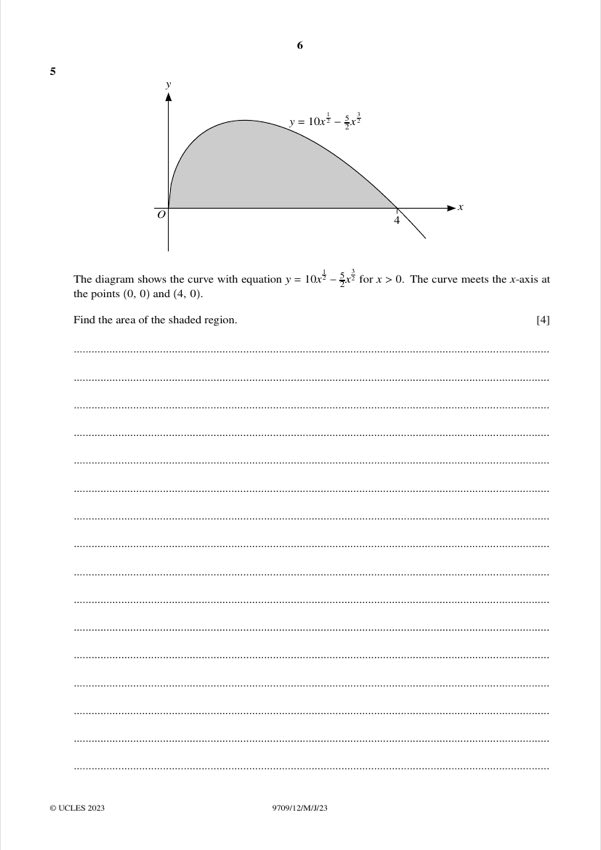
Original paper page 6
Area = ∫₀⁴ (10x^(1/2) − (5/2)x^(3/2)) dx = [(20/3)x^(3/2) − x^(5/2)]₀⁴
= (20/3)(8) − 32 = 64/3
Area = 64/3 (≈ 21.3)
Question 6 [2 + 4]
The diagram shows a sector OAB of a circle with centre O. Angle AOB = θ radians and OP = AP = x.
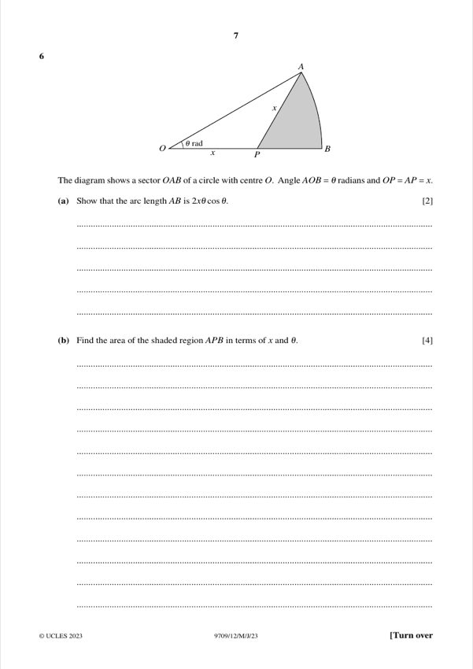
Original paper page 7
(a) [2] Show that the arc length AB is 2xθ cos θ.
Triangle OAP is isosceles with base angles θ, so ∠OPA = π − 2θ.
By the sine rule: OA = x sin(π − 2θ)/sin θ = 2x cos θ
Arc AB = r·θ = 2xθ cos θ
Shown
(b) [4] Find the area of the shaded region APB in terms of x and θ.
Sector OAB = ½(2x cos θ)²θ = 2x²θ cos²θ
Triangle OAP = ½ · x · 2x cos θ · sin θ = x² sin θ cos θ
Shaded = 2x²θ cos²θ − x² sin θ cos θ
x² cos θ (2θ cos θ − sin θ)
Question 7 [3 + 2 + 2 + 3 + 3]
(a)(i) By expanding (cos θ + sin θ)², find the three solutions of (cos θ + sin θ)² = 1 for 0 ≤ θ ≤ π. (ii) Hence verify that the only solutions of cos θ + sin θ = 1 for 0 ≤ θ ≤ π are 0 and ½π. (b) Prove the identity sin θ/(cos θ + sin θ) + (1 − cos θ)/(cos θ − sin θ) = (cos θ + sin θ − 1)/(1 − 2 sin² θ). (c) Using the results of (a)(ii) and (b), solve sin θ/(cos θ + sin θ) + (1 − cos θ)/(cos θ − sin θ) = 2(cos θ + sin θ − 1) for 0 ≤ θ ≤ π.
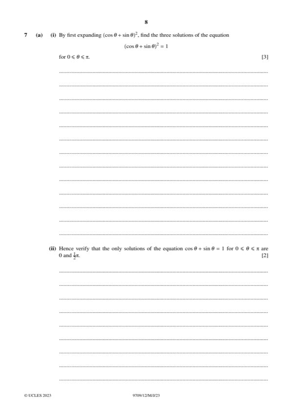
Original paper page 8
(a)(i) [3]
(cos θ + sin θ)² = 1 + sin 2θ = 1 → sin 2θ = 0
2θ = 0, π, 2π → θ = 0, ½π, π
θ = 0, ½π, π
(a)(ii) [2]
θ = π gives cos π + sin π = −1 ≠ 1, so it is rejected.
θ = 0 gives 1 and θ = ½π gives 1, so these are the only solutions.
Verified: θ = 0 or ½π
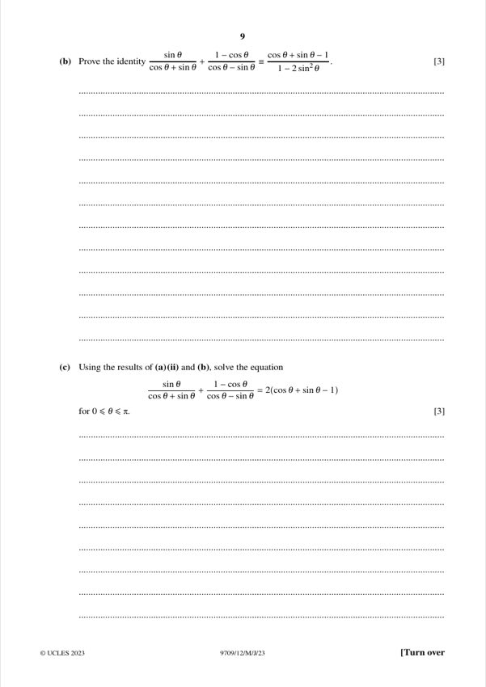
Original paper page 9
(b) [3]
Common denominator (cos θ + sin θ)(cos θ − sin θ) = cos 2θ = 1 − 2 sin² θ
Numerator: sin θ(cos θ − sin θ) + (1 − cos θ)(cos θ + sin θ)
= sin θ cos θ − sin² θ + cos θ + sin θ − cos² θ − sin θ cos θ
= cos θ + sin θ − 1
Identity shown
(c) [3]
Using (b): (cos θ + sin θ − 1)/(1 − 2 sin² θ) = 2(cos θ + sin θ − 1)
So (cos θ + sin θ − 1)[1/(1 − 2 sin² θ) − 2] = 0
Case 1: cos θ + sin θ − 1 = 0 → θ = 0 or ½π (from (a)(ii))
Case 2: 1/(1 − 2 sin² θ) = 2 → 1 − 2 sin² θ = ½ → sin θ = ½ → θ = π/6, 5π/6
Denominators are non-zero at all four values.
θ = 0, π/6, ½π, 5π/6
Question 8 [2 + 2 + 2 + 2 + 6]
f(x) = 3 + 2 sin(¼x) for 0 ≤ x ≤ 2π. (a) Sketch the graph of y = f⁻¹(x). (b) Find an expression for f⁻¹(x). (c) Complete the sketch of g(x) = 3 + 2 sin(¼x) for −2π ≤ x ≤ 2π and explain whether g has an inverse. (d) Describe three transformations that take y = sin x (0 ≤ x ≤ ½π) to y = f(x), in order.
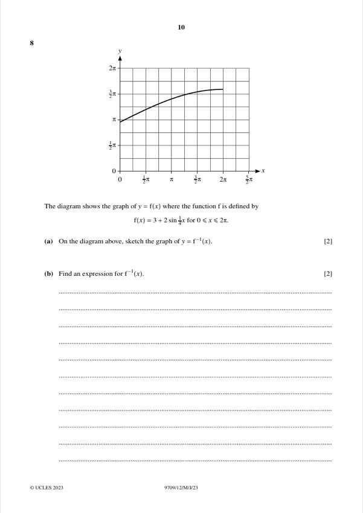
Original paper page 10
(a) [2]
f runs from (0, 3) to (2π, 5). Reflect in y = x: the inverse runs from (3, 0) to (5, 2π).
It is a reflection of the given curve in the line y = x.
Reflect the curve in y = x (from (3, 0) to (5, 2π))
(b) [2]
y = 3 + 2 sin(¼x) → sin(¼x) = (y − 3)/2 → x = 4 arcsin((y − 3)/2)
f⁻¹(x) = 4 arcsin((x − 3)/2), for 3 ≤ x ≤ 5
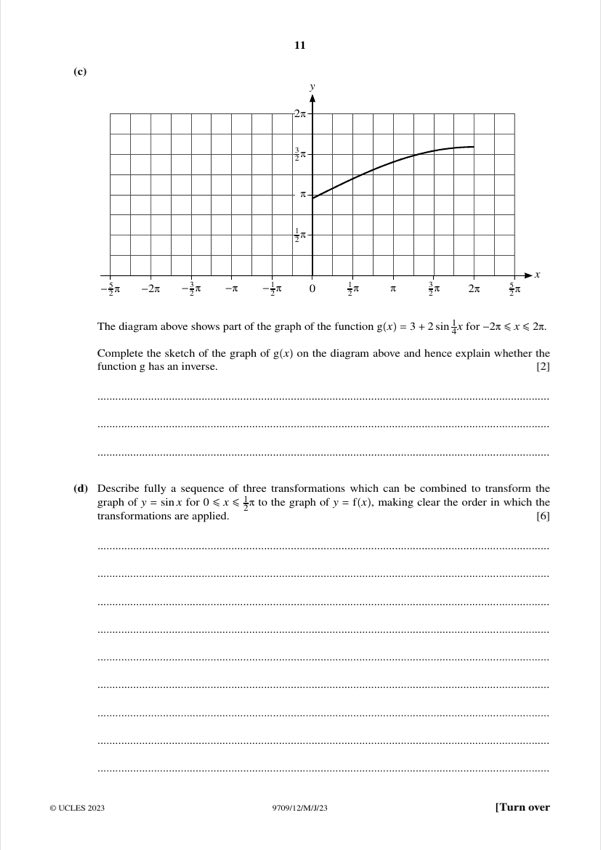
Original paper page 11
(c) [2]
For −2π ≤ x ≤ 2π, x/4 lies in [−½π, ½π], where sin is strictly increasing.
So g is one-to-one, and the curve runs from (−2π, 1) to (2π, 5).
g has an inverse (it is one-to-one on this domain)
(d) [6]
1. Stretch parallel to the x-axis with scale factor 4 (sin x → sin(x/4)), which maps 0 ≤ x ≤ ½π to 0 ≤ x ≤ 2π.
2. Stretch parallel to the y-axis with scale factor 2 (→ 2 sin(x/4)).
3. Translate by 3 units in the positive y-direction (→ 3 + 2 sin(x/4)).
The order matters: the x-stretch is applied first.
x-stretch ×4, then y-stretch ×2, then translation (0, 3)
Question 9 [4 + 4]
The second term of a geometric progression is 16 and the sum to infinity is 100. (a) Find the two possible values of the first term. (b) Show that the nth term of one of the two progressions is 4ⁿ⁻² multiplied by the nth term of the other.
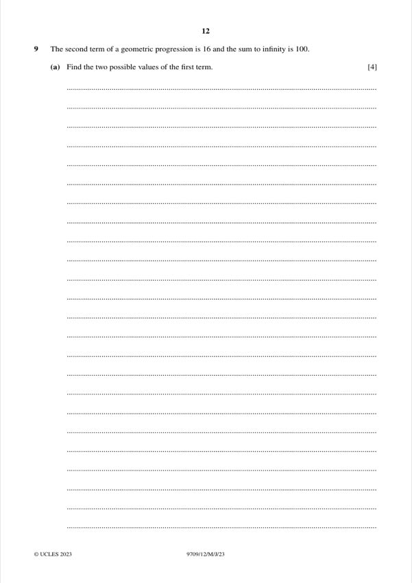
Original paper page 12
(a) [4]
ar = 16, a/(1 − r) = 100 → a = 16/r
(16/r)/(1 − r) = 100 → 25r² − 25r + 4 = 0 → r = 0.8 or 0.2
r = 0.8: a = 20; r = 0.2: a = 80
a = 20 or a = 80
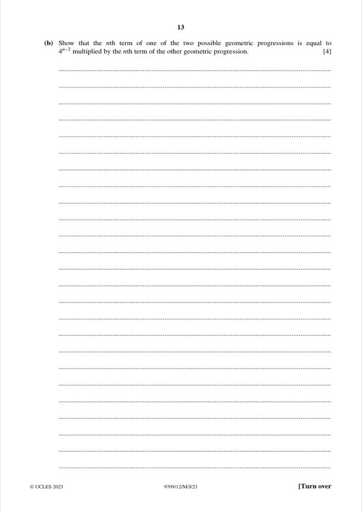
Original paper page 13
(b) [4]
Progression 1: Tₙ = 20(0.8)ⁿ⁻¹
Progression 2: Tₙ = 80(0.2)ⁿ⁻¹
Ratio: Tₙ(1)/Tₙ(2) = (20/80)(0.8/0.2)ⁿ⁻¹ = ¼ · 4ⁿ⁻¹ = 4ⁿ⁻²
Shown
Question 10 [5 + 4 + 4]
The circle (x − a)² + (y − 3)² = 20 has the line y = ½x + 6 as a tangent at P. (a) Show that one value of a is 4 and find the other value. (b) For a = 4, find the normal to the circle at P. (c) For a = 4, find the two tangents to the circle parallel to the normal in (b).
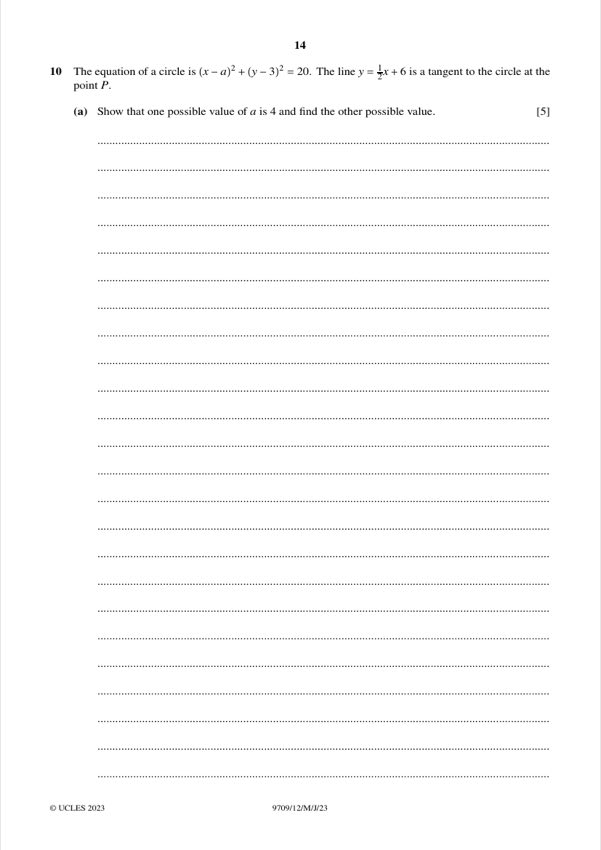
Original paper page 14
(a) [5]
Line: x − 2y + 12 = 0. Centre (a, 3), radius √20.
Distance: |a − 6 + 12|/√5 = √20 → |a + 6| = 10
a = 4 (given) or a = −16
Other value: a = −16
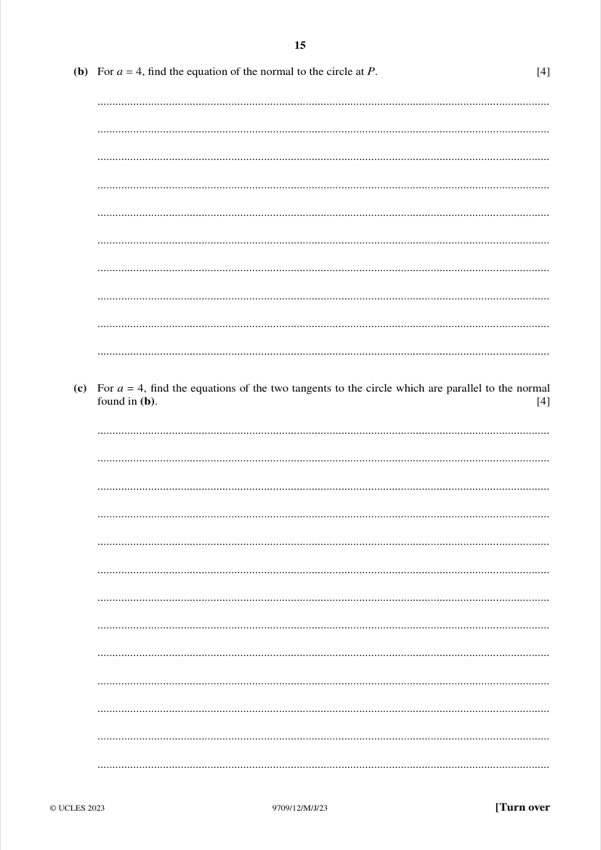
Original paper page 15
(b) [4]
Normal through the centre (4, 3) perpendicular to the tangent (slope −2): y = −2(x − 4) + 3
Meets the tangent y = ½x + 6 where −2x + 11 = ½x + 6 → x = 2, y = 7
P = (2, 7); normal slope = (3 − 7)/(4 − 2) = −2
y = −2x + 11, i.e. 2x + y − 11 = 0
(c) [4]
Tangents parallel to the normal have the form 2x + y − c = 0.
Distance from (4, 3): |11 − c|/√5 = √20 → |11 − c| = 10 → c = 1 or 21
y = −2x + 1 and y = −2x + 21